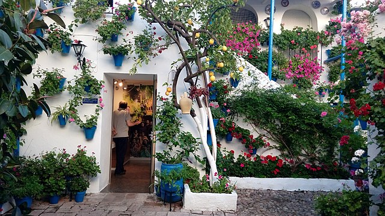

El Festival de los Patios Cordobeses es un concurso de patios de Córdoba (España) celebrado, generalmente, durante la segunda y tercera semana del mes de mayo. Los participantes decoran y abren sus patios gratuitamente para que puedan ser visitados dentro del horario establecido para tal fin. En los últimos años, los patios en concursos se señalan con macetas de setos que se colocan flanqueando las puertas, de modo que puedan ser identificados de manera clara.
A fin de incentivar el festival y conservar la arquitectura típica de la ciudad, se admiten a concurso patios de reciente construcción, estableciéndose dos categoría: arquitectura antigua y arquitectura moderna. En los últimos años, hasta 50 patios han participado en el certamen. Además, el festival se completa con un programa educativo organizado por el Ayuntamiento de Córdoba cuyo objetivo es dar a conocer a los estudiantes la arquitectura y el patrimonio, así como promover el respecto por el mismo.
Además, la fiesta se completa con una verbena en el barrio de San Basilio: la asociación de vecinos del barrio pone una barra en un espacio junto a la torre de Belén, y los bares de la calle San Basilio contribuyen con música y venta de bebidas a los grupos de cordobeses y turistas que se reúnen allí.
En 1980 fueron declarados como Fiesta de Interés Turístico Nacional, y tras un larga tramitación, consiguieron inscribirse como Patrimonio Cultural Inmaterial de la Humanidad por la Unesco el 6 de diciembre de 2012.
El primer Festival de Patios Cordobeses fue convocado por el alcalde de Córdoba Francisco Fernández de Mesa en 1921 como «Concurso de Patios, Balcones y Escaparates». Se establecieron tres premios de 100, 75 y 50 pesetas que fueron repartidos entre los pocos participantes. Debido a la escasa respuesta vecinal, el concurso no volvió a celebrarse hasta 1933, cuando comienzan a popularizarse y se presentan 16 patios repartidos por la ciudad, con premios cuantiosos para la época.
Durante la Guerra civil española (1936-39) el concurso fue cancelado, regresando una vez concluida la contienda en 1939 como un acto más de la feria cordobesa; por lo que se vuelve en el año 1943 a comentar por la prensa local la necesidad de volver al tradicional Concurso de Patios. Para ello se hace una enumeración de algunos que en aquella época estaban adornados y eran visitados sin que hubiera apoyo y concurso por parte del Ayuntamiento. Eran los siguientes: calle Leiva Aguilar 10, calle Buen Pastor, calle de los Ángeles, Casa de las Bulas esquina a calle Judíos. Fue en el año 1944, durante el mandato de Antonio Luna Fernández, la primera constatación de posguerra en la cual se convoca concurso, cuando también se establecen los primeros criterios de valoración como la arquitectura, la decoración y sus características.2 Los dos años siguientes se celebra el Festival, aunque no se datan los premios, por lo que va a ser en 1947 cuando se consolide el concurso.